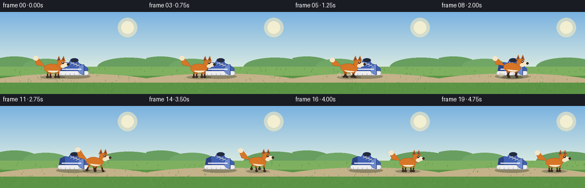
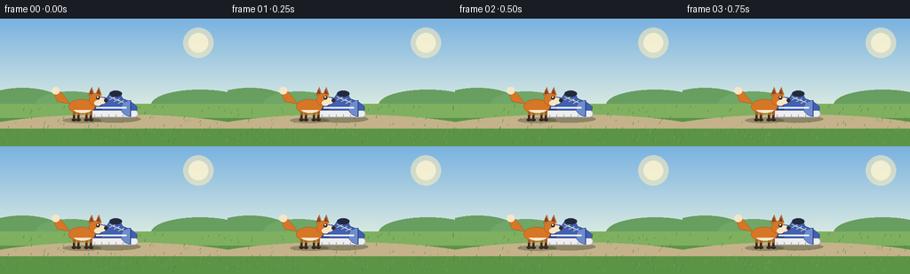
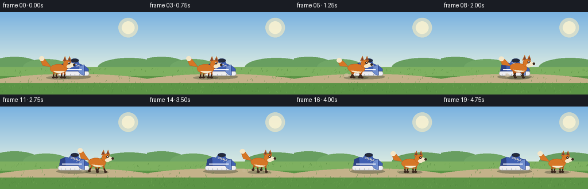
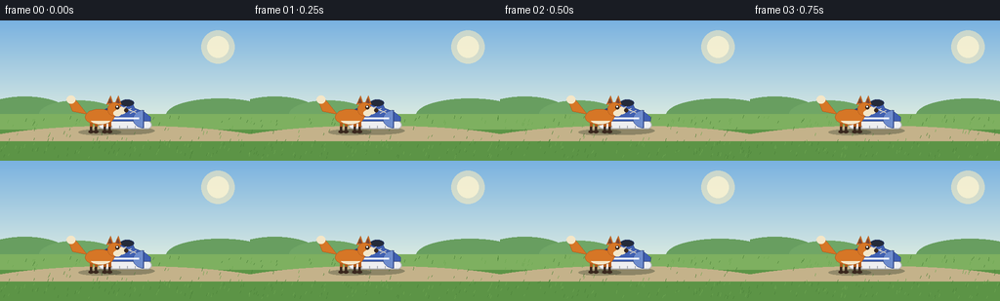

CODING AGENTS AS PIXEL WORLD MODELS
traex/Seed-2.1-Pro-0915 · dynamic_spatial_relationship_0027
点击播放 · 原生 RGB 像素
逐轮保存的候选
回放视频、检查图与代码变化。
每份候选均可单独播放。实际图片检查记录在下方工具轨迹中。
候选 01播放与检查图
点击播放 · 原生 RGB 像素


展开代码变化
--- 上一保存版本
+++ 本次保存版本
@@ -0,0 +1,268 @@
+"""Procedural text-to-video generation.
+
+Scene: a fox stands in front of a shoe, then runs to the right of the shoe.
+Renders 20 RGB frames (256x144 @ 4fps) with PIL only, at 2x supersampling
+for smooth edges, then saves via artifact_io.save.
+"""
+import math
+
+import numpy as np
+from PIL import Image, ImageDraw
+
+import artifact_io
+
+W, H, N, FPS = 256, 144, 20, 4.0
+SS = 2 # supersampling factor
+
+# Palette
+SKY_TOP = (122, 178, 224)
+SKY_BOT = (214, 232, 226)
+GRASS_FAR = (126, 176, 96)
+GRASS_NEAR = (92, 148, 70)
+PATH_COL = (196, 178, 138)
+ORANGE = (214, 118, 38)
+ORANGE_D = (178, 88, 26)
+CREAM = (244, 230, 200)
+DARK = (58, 40, 30)
+SHOE_MAIN = (64, 96, 178)
+SHOE_DARK = (44, 66, 132)
+SOLE = (238, 238, 240)
+
+rng = np.random.default_rng(7)
+
+
+def s(v):
+ """Scale a native-resolution coordinate to the supersampled canvas."""
+ return v * SS
+
+
+def sw(v):
+ """Integer stroke width at supersampled resolution."""
+ return max(1, int(round(s(v))))
+
+
+def draw_background(img):
+ draw = ImageDraw.Draw(img, "RGBA")
+ # Vertical sky gradient
+ horizon = s(96)
+ for y in range(0, horizon):
+ t = y / max(1, horizon - 1)
+ col = tuple(int(SKY_TOP[i] * (1 - t) + SKY_BOT[i] * t) for i in range(3))
+ draw.line([(0, y), (s(W), y)], fill=col)
+ # Soft sun glow
+ draw.ellipse([s(206), s(10), s(240), s(44)], fill=(250, 236, 190, 150))
+ draw.ellipse([s(212), s(16), s(234), s(38)], fill=(252, 244, 210, 200))
+ # Distant hills / bushes
+ draw.ellipse([s(-20), s(78), s(70), s(112)], fill=(104, 158, 96, 255))
+ draw.ellipse([s(40), s(82), s(120), s(110)], fill=(112, 166, 102, 255))
+ draw.ellipse([s(170), s(80), s(280), s(114)], fill=(104, 158, 96, 255))
+ # Ground
+ draw.rectangle([0, horizon, s(W), s(H)], fill=GRASS_FAR)
+ draw.rectangle([0, s(112), s(W), s(H)], fill=GRASS_NEAR)
+ # Dirt path strip
+ draw.ellipse([s(-30), s(108), s(286), s(150)], fill=PATH_COL)
+ draw.rectangle([0, s(124), s(W), s(H)], fill=GRASS_NEAR)
+ # Deterministic grass tufts
+ for _ in range(220):
+ x = rng.uniform(0, W)
+ y = rng.uniform(100, H - 2)
+ if 108 < y < 124 and rng.random() < 0.7:
+ continue
+ col = (76, 130, 58) if rng.random() < 0.5 else (110, 166, 82)
+ h = rng.uniform(1.5, 3.5)
+ draw.line([(s(x), s(y)), (s(x) + s(0.8), s(y - h))], fill=col)
+
+
+def draw_shoe(img, cx, gy):
+ """Side-view sneaker resting on the ground at (cx, gy)."""
+ draw = ImageDraw.Draw(img, "RGBA")
+ # Contact shadow
+ draw.ellipse([s(cx - 30), s(gy - 3), s(cx + 30), s(gy + 5)], fill=(40, 50, 35, 90))
+ # Sole
+ draw.rounded_rectangle([s(cx - 27), s(gy - 9), s(cx + 27), s(gy - 1)],
+ radius=s(4), fill=SOLE, outline=(180, 182, 188), width=sw(1))
+ # Sole tread grooves
+ for gx in range(-22, 25, 8):
+ draw.line([(s(cx + gx), s(gy - 4)), (s(cx + gx), s(gy - 1))],
+ fill=(170, 172, 178), width=sw(1))
+ # Upper body (toe points right)
+ upper = [
+ (cx - 25, gy - 9), (cx - 23, gy - 20), (cx - 14, gy - 24),
+ (cx - 8, gy - 23), (cx - 4, gy - 29), (cx + 6, gy - 29),
+ (cx + 10, gy - 22), (cx + 20, gy - 18), (cx + 26, gy - 13),
+ (cx + 26, gy - 9),
+ ]
+ draw.polygon([(s(x), s(y)) for x, y in upper], fill=SHOE_MAIN, outline=SHOE_DARK)
+ # Heel panel
+ draw.polygon([(s(cx - 25), s(gy - 9)), (s(cx - 23), s(gy - 20)),
+ (s(cx - 15), s(gy - 23)), (s(cx - 14), s(gy - 9))],
+ fill=SHOE_DARK)
+ # Toe cap
+ draw.pieslice([s(cx + 8), s(gy - 20), s(cx + 30), s(gy - 2)],
+ start=90, end=270, fill=(110, 140, 205), outline=SHOE_DARK)
+ # Collar opening
+ draw.ellipse([s(cx - 5), s(gy - 31), s(cx + 9), s(gy - 24)],
+ fill=(36, 42, 58), outline=SHOE_DARK)
+ # Laces
+ for i in range(3):
+ lx = cx - 2 + i * 5
+ ly = gy - 21 + i * 2
+ draw.line([(s(lx - 3), s(ly)), (s(lx + 3), s(ly - 3))],
+ fill=CREAM, width=sw(1))
+ draw.line([(s(lx + 3), s(ly)), (s(lx - 3), s(ly - 3))],
+ fill=CREAM, width=sw(1))
+ # Side stripe
+ draw.line([(s(cx - 20), s(gy - 12)), (s(cx + 14), s(gy - 12))],
+ fill=(235, 240, 250), width=sw(2))
+
+
+def draw_fox(img, fx, gy, phase, running, t):
+ """Cartoon fox facing right, feet anchored near (fx, gy)."""
+ draw = ImageDraw.Draw(img, "RGBA")
+ bob = math.sin(phase * 2) * (1.6 if running else 0.5)
+ cy = gy - 15 + bob # body center height
+ lean = 0.10 if running else 0.0
+
+ # Contact shadow (scales slightly with bob)
+ sh_w = 22 - abs(bob) * 1.5
+ draw.ellipse([s(fx - sh_w), s(gy - 2.5), s(fx + sh_w), s(gy + 3.5)],
+ fill=(40, 50, 35, 80))
+
+ # Tail: sweeps up behind the body, sways with the run cycle
+ sway = math.sin(phase) * (3.5 if running else 1.0)
+ tail_base = (fx - 13, cy - 3)
+ tail_mid = (fx - 24, cy - 9 + sway * 0.4)
+ tail_tip = (fx - 30, cy - 18 + sway)
+ # Thick tail as a tapered polygon around the spine curve
+ tail_poly = [
+ tail_base,
+ (tail_mid[0] - 4, tail_mid[1] + 3),
+ (tail_tip[0] - 2, tail_tip[1] + 2),
+ (tail_tip[0] + 4, tail_tip[1] - 1),
+ (tail_mid[0] + 3, tail_mid[1] - 4),
+ ]
+ draw.polygon([(s(x), s(y)) for x, y in tail_poly], fill=ORANGE, outline=ORANGE_D)
+ # White tail tip
+ draw.ellipse([s(tail_tip[0] - 4), s(tail_tip[1] - 4),
+ s(tail_tip[0] + 5), s(tail_tip[1] + 4)], fill=CREAM)
+
+ # Legs: four swinging legs (diagonal pairs share a phase offset)
+ hip_y = cy + 5
+ leg_hips = [fx - 9, fx - 4, fx + 5, fx + 10]
+ for i, hx in enumerate(leg_hips):
+ lp = phase + (0 if i % 2 == 0 else math.pi)
+ swing = math.sin(lp) * (5.0 if running else 0.6)
+ lift = max(0.0, math.cos(lp)) * (4.0 if running else 0.0)
+ foot_x = hx + swing
+ foot_y = gy - lift
+ # Upper leg
+ draw.line([(s(hx), s(hip_y)), (s((hx + foot_x) / 2), s((hip_y + foot_y) / 2))],
+ fill=ORANGE_D, width=sw(3))
+ # Lower leg + dark sock
+ draw.line([(s((hx + foot_x) / 2), s((hip_y + foot_y) / 2)),
+ (s(foot_x), s(foot_y))], fill=DARK, width=sw(2.5))
+ # Paw
+ draw.ellipse([s(foot_x - 2.2), s(foot_y - 1.5), s(foot_x + 2.6), s(foot_y + 1.8)],
+ fill=DARK)
+
+ # Body: rotated ellipse approximated with a polygon
+ body_pts = []
+ for k in range(24):
+ a = 2 * math.pi * k / 24
+ bx = math.cos(a) * 15
+ by = math.sin(a) * 8
+ rx = bx * math.cos(lean) - by * math.sin(lean)
+ ry = bx * math.sin(lean) + by * math.cos(lean)
+ body_pts.append((s(fx + rx), s(cy + ry)))
+ draw.polygon(body_pts, fill=ORANGE, outline=ORANGE_D)
+ # Cream belly
+ belly_pts = []
+ for k in range(12):
+ a = math.pi * (0.15 + 0.7 * k / 11)
+ bx = math.cos(a) * 11
+ by = math.sin(a) * 5.5
+ rx = bx * math.cos(lean) - by * math.sin(lean)
+ ry = bx * math.sin(lean) + by * math.cos(lean)
+ belly_pts.append((s(fx + 1 + rx), s(cy + 2 + ry)))
+ draw.polygon(belly_pts, fill=CREAM)
+
+ # Head, ahead of the body
+ hx, hy = fx + 15, cy - 8
+ # Ears
+ for dx in (-5, 3):
+ ear = [(hx + dx - 3, hy - 5), (hx + dx + 1, hy - 14), (hx + dx + 4, hy - 5)]
+ draw.polygon([(s(x), s(y)) for x, y in ear], fill=ORANGE, outline=ORANGE_D)
+ inner = [(hx + dx - 1.5, hy - 6.5), (hx + dx + 0.8, hy - 11.5),
+ (hx + dx + 2.6, hy - 6.5)]
+ draw.polygon([(s(x), s(y)) for x, y in inner], fill=(120, 70, 55))
+ # Skull
+ draw.ellipse([s(hx - 7), s(hy - 7), s(hx + 7), s(hy + 7)],
+ fill=ORANGE, outline=ORANGE_D)
+ # Snout
+ draw.ellipse([s(hx + 2), s(hy - 2), s(hx + 12), s(hy + 5)], fill=CREAM)
+ draw.ellipse([s(hx + 10), s(hy - 1), s(hx + 14), s(hy + 3)], fill=DARK) # nose
+ # Cheek / jaw
+ draw.ellipse([s(hx - 1), s(hy + 1), s(hx + 7), s(hy + 7)], fill=CREAM)
+ # Eye with blink near the end of the run
+ blink = (not running) and (int(t * 10) % 7 == 3)
+ if blink:
+ draw.arc([s(hx - 1), s(hy - 4), s(hx + 5), s(hy + 1)],
+ start=200, end=340, fill=DARK, width=sw(1))
+ else:
+ draw.ellipse([s(hx + 1), s(hy - 4), s(hx + 5), s(hy)], fill=DARK)
+ draw.ellipse([s(hx + 2.2), s(hy - 3.2), s(hx + 3.6), s(hy - 1.8)],
+ fill=(255, 255, 255))
+
+ # Running dust puffs behind the rear paws
+ if running:
+ for k in range(3):
+ dp = (phase - k * 1.1) % (2 * math.pi)
+ life = 1 - dp / (2 * math.pi)
+ px = fx - 12 - k * 4 - dp * 2
+ py = gy - 1 - life * 3
+ r = 1.5 + life * 2
+ draw.ellipse([s(px - r), s(py - r), s(px + r), s(py + r)],
+ fill=(210, 195, 165, int(110 * life)))
+
+
+def smoothstep(a, b, x):
+ if x <= a:
+ return 0.0
+ if x >= b:
+ return 1.0
+ u = (x - a) / (b - a)
+ return u * u * (3 - 2 * u)
+
+
+def main():
+ frames = []
+ shoe_x, ground_y = 128, 112
+ x_start, x_end = 92, 202
+ run_a, run_b = 3, 16 # frame window for the run
+ prev_u = 0.0
+ leg_phase = 0.0
+
+ for fi in range(N):
+ t = fi / FPS
+ u = smoothstep(run_a, run_b, fi)
+ running = run_a < fi < run_b
+ # Advance leg cycle based on actual horizontal travel
+ leg_phase += (u - prev_u) * 4.2 * 2 * math.pi
+ prev_u = u
+ fx = x_start + (x_end - x_start) * u
+
+ big = Image.new("RGB", (W * SS, H * SS))
+ draw_background(big)
+ draw_shoe(big, shoe_x, ground_y)
+ draw_fox(big, fx, ground_y + 2, leg_phase, running, t)
+
+ frame = big.resize((W, H), Image.Resampling.LANCZOS)
+ frames.append(np.asarray(frame, dtype=np.uint8))
+
+ frames = np.stack(frames, axis=0)
+ artifact_io.save(frames, ".")
+ print(f"Saved {frames.shape} frames")
+
+
+if __name__ == "__main__":
+ main()
候选 02播放与检查图
点击播放 · 原生 RGB 像素


展开代码变化
--- 上一保存版本
+++ 本次保存版本
@@ -237,7 +237,7 @@
def main():
frames = []
shoe_x, ground_y = 128, 112
- x_start, x_end = 92, 202
+ x_start, x_end = 102, 202
run_a, run_b = 3, 16 # frame window for the run
prev_u = 0.0
leg_phase = 0.0
可观测工具轨迹
实际执行的命令与返回图片。
命令 1exit 0
/bin/bash -lc 'cat prompt.txt GENERATION_RULES.md task_spec.json 2>/dev/null; ls -la'
命令 2exit 0
/bin/bash -lc 'cat artifact_io.py'
命令 3exit 1
/bin/bash -lc 'cd . && python generate.py && ls -la'
命令 4exit 0
/bin/bash -lc 'cd . && python generate.py && ls frames | head && ls -la pixels.npz inspection.png index.html'
命令 5exit 0
/bin/bash -lc "cd . && python - <<'EOF'
import numpy as np
from PIL import Image
def orange_mask(a):
r,g,b = a[...,0].astype(int), a[...,1].astype(int), a[...,2].astype(int)
return (r>150)&(g>70)&(g<160)&(b<90)&(r-g>50)
for i in [0,2,3,6,9,12,15,16,19]:
a=np.asarray(Image.open(f\"frames/{i:02d}.png\"))
m=orange_mask(a)
ys,xs=np.where(m)
print(f\"f{i:02d}: orange x=[{xs.min()},{xs.max()}] mean={xs.mean():.0f} n={m.sum()}\")
# check frame 0 fox overlaps shoe center column (128) and shoe blue pixels still visible around
a0=np.asarray(Image.open(\"frames/00.png\"))
col=a0[:,128,:]
print(\"frame0 col128 colors sample:\", col[88:112:4].tolist())
EOF"命令 6exit 0
/bin/bash -lc "cd . && python generate.py && python - <<'EOF'
import numpy as np
from PIL import Image
def orange_mask(a):
r,g,b = a[...,0].astype(int), a[...,1].astype(int), a[...,2].astype(int)
return (r>150)&(g>70)&(g<160)&(b<90)&(r-g>50)
for i in [0,3,9,15,19]:
a=np.asarray(Image.open(f\"frames/{i:02d}.png\"))
m=orange_mask(a)
ys,xs=np.where(m)
print(f\"f{i:02d}: orange x=[{xs.min()},{xs.max()}] y=[{ys.min()},{ys.max()}]\")
# shoe still visible behind fox in frame 0: count blue shoe pixels at col<120
a0=np.asarray(Image.open(\"frames/00.png\")).astype(int)
blue=(a0[...,2]>120)&(a0[...,0]<110)
ys,xs=np.where(blue)
print(\"frame0 blue shoe x-range:\", xs.min(), xs.max())
# final frame: fox fully right of shoe (shoe right edge 155); check no orange left of 160
a19=np.asarray(Image.open(\"frames/19.png\"))
m19=orange_mask(a19)
print(\"frame19 orange min x:\", np.where(m19)[1].min())
# shape & dtype of saved tensor
d=np.load(\"pixels.npz\")[\"pixels\"]
print(\"tensor shape:\", d.shape, d.dtype)
EOF"命令 7exit 0
/bin/bash -lc "cd . && python - <<'EOF'
import numpy as np
from PIL import Image
def classify(a):
r,g,b=a[...,0].astype(int),a[...,1].astype(int),a[...,2].astype(int)
out=np.full(a.shape[:2],'.')
out[(r>150)&(g>70)&(g<160)&(b<90)]='F' # fox orange
out[(b>120)&(r<110)]='S' # shoe blue
out[(r>225)&(g>225)&(b>225)]='w' # white/sun
out[(r<90)&(g>120)]='g' # grass
out[(abs(r-g)<24)&(r>150)&(b<160)]='p' # path
return out
for fi in (0,9,19):
a=np.asarray(Image.open(f\"frames/{fi:02d}.png\"))
c=classify(a)
small=c[70:144:4, 40:240:8]
print(f\"--- frame {fi} ---\")
for row in small: print(''.join(row))
# centroid smoothness
xs=[]
for i in range(20):
a=np.asarray(Image.open(f\"frames/{i:02d}.png\")).astype(int)
m=(a[...,0]>150)&(a[...,1]>70)&(a[...,1]<160)&(a[...,2]<90)
xs.append(np.where(m)[1].mean())
print(\"centroid x:\", [round(x,1) for x in xs])
print(\"deltas:\", [round(xs[i+1]-xs[i],1) for i in range(19)])
EOF"保存候选 2 份；完成命令 7 次；可验证图片返回 0 张。原始 API 响应与完整日志保留在本地。